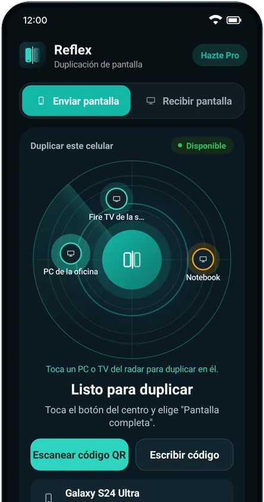
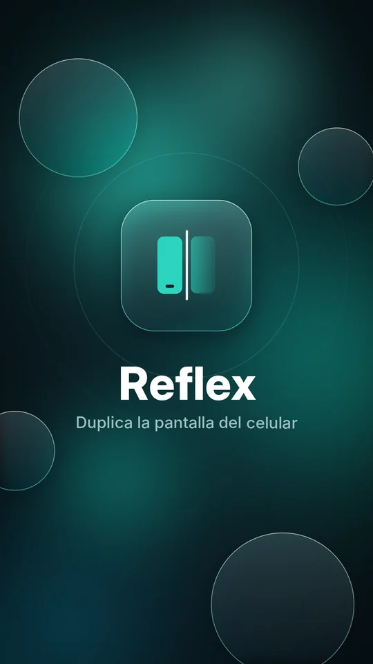
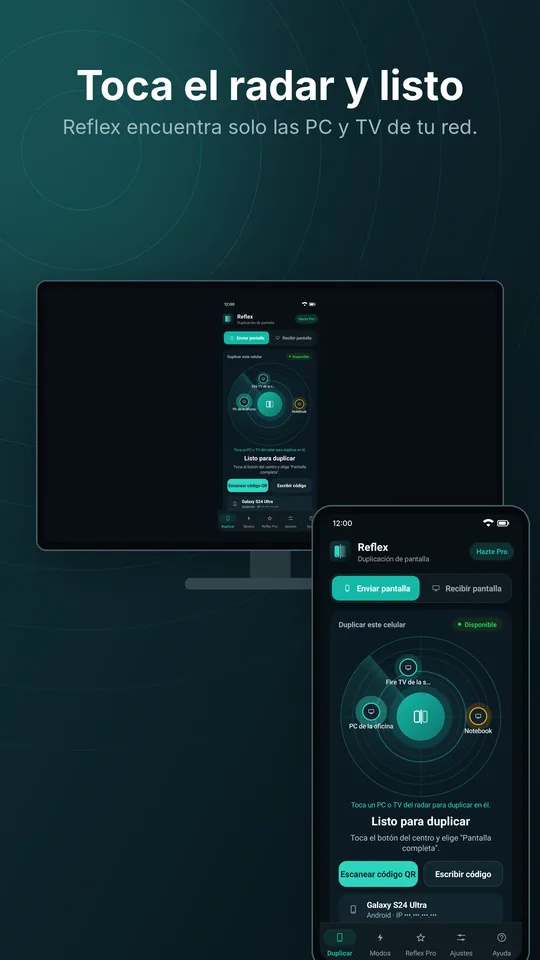
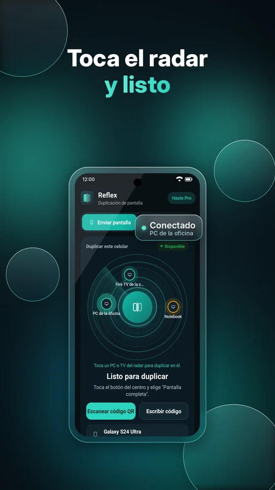
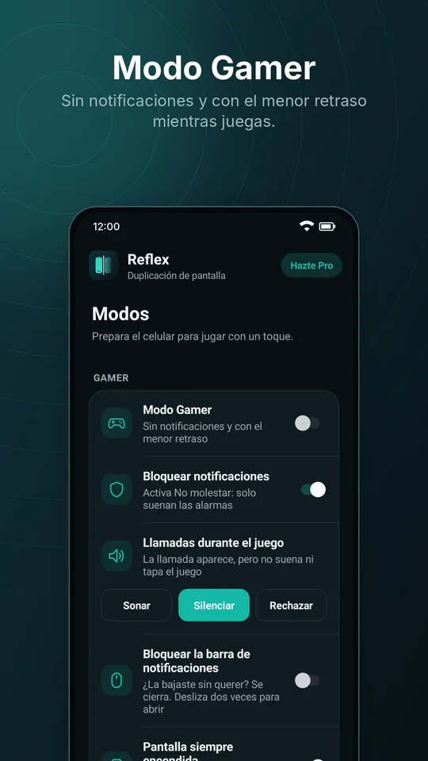
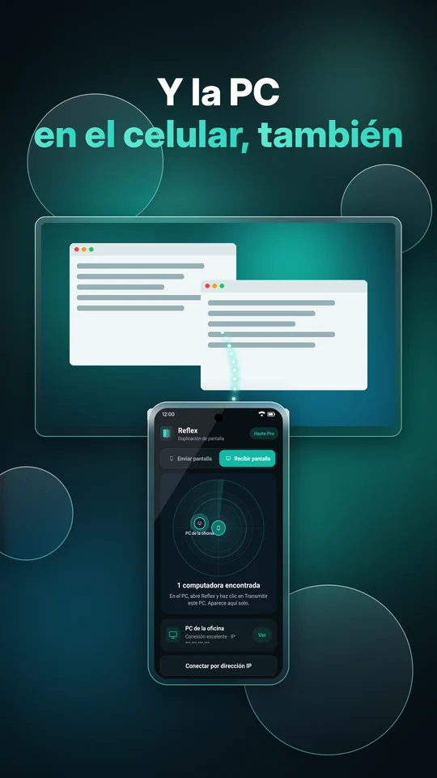
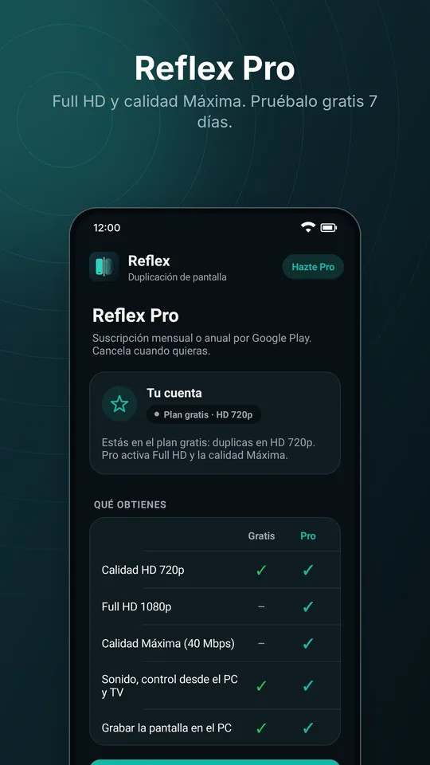

Celular Android
La app que envía la pantalla. También recibe la pantalla de la PC.
Versión 1.15.5
Google PlayInstálalo desde Google Play para recibir actualizaciones y poder suscribirte a Reflex Pro.
Gratis · sin anuncios · sin cable
Imagen y sonido de tu Android en la computadora y en la televisión, por Wi-Fi. Abre Reflex en los dos dispositivos, toca el radar y listo.
Celular con Android 10 o más nuevo · PC con Windows 10 u 11 (64 bits) · Fire TV y Android TV

Instálalo en el celular y en el dispositivo donde quieres ver la pantalla. Los enlaces siempre descargan la versión más nueva, y después Reflex se actualiza solo.
La app que envía la pantalla. También recibe la pantalla de la PC.
Versión 1.15.5
Google PlayInstálalo desde Google Play para recibir actualizaciones y poder suscribirte a Reflex Pro.
Muestra la pantalla del celular, la graba, controla juegos y transmite la PC al celular.
Versión 1.15.4
Descargar Reflex-Setup.exeSe instala sin contraseña de administrador.
Mira el celular en la televisión. Funciona en Fire TV Stick y en TV con Android.
Versión 1.15.4
Descargar Reflex-TV.apkEn la TV, escribe is.gd/reflextv en la app Downloader.
Hecho para ser simple: sin cuenta, sin cable y sin configurar nada.
El celular encuentra solo las PC y TV de tu red. También puedes conectar con un código QR o un código.
Videos, juegos y música se reproducen en la PC o la TV con el sonido del celular, hasta 60 fps.
En la PC, haz clic en Transmitir esta PC y mira la computadora en la pantalla del celular.
Graba en video MP4 lo que muestra el celular, directo en la PC. Atajo Ctrl+R.
Sin notificaciones, llamadas silenciadas, el menor retraso y teclas de la PC asignadas en la pantalla del juego.
Muestra el celular en más de una PC o TV al mismo tiempo.
La imagen va directo del celular a la PC dentro de tu Wi-Fi. Nada pasa por servidores y nada se graba fuera de tus dispositivos.






Descarga Reflex en el celular y en la PC o la TV. La primera vez en la PC, permite Reflex en Redes privadas cuando Windows lo pregunte.
Deja el celular y la PC (o la TV) en la misma red Wi-Fi y abre Reflex en los dos.
En el celular, toca la PC o la TV que aparece en el radar y acepta el aviso de Android. La pantalla aparece al instante.
El plan gratis ya lo hace todo, sin anuncios. Reflex Pro hace la imagen más nítida.
Gratis para siempre
7 días gratis para probar
Pro suscripción mensual o anual
La suscripción se hace en la app del celular, en la pestaña Pro, con Google Play. Ahí ves el precio de tu país.
Sí. El plan gratis duplica en HD 720p, con sonido, sin anuncios y sin límite de tiempo. Reflex Pro es opcional y desbloquea Full HD y la calidad Máxima, con 7 días gratis para probar.
No necesitas cable. El celular y la PC (o la TV) solo deben estar en el mismo Wi-Fi. La imagen va directo de un dispositivo al otro, sin pasar por internet.
Sí. Ese aviso aparece con programas nuevos que todavía no tienen muchas descargas. Haz clic en Más información y luego en Ejecutar de todas formas.
Revisa que los dos estén en el mismo Wi-Fi (las redes de invitados suelen bloquearlo). En la PC, permite Reflex en Redes privadas en el Firewall de Windows. Si aún no aparece, usa Escanear código QR o Escribir código en el celular.
Instala Reflex desde Google Play, abre la pestaña Pro en el celular y elige el plan mensual o anual. La suscripción queda en tu cuenta de Google, y la PC y la TV reciben la calidad Pro del celular conectado.
Celulares con Android 10 o más nuevo, PC con Windows 10 u 11 de 64 bits, Fire TV Stick y TV con Android TV.
No. Nada de tu pantalla se envía a internet, a nosotros ni a terceros. Mira la Política de Privacidad.